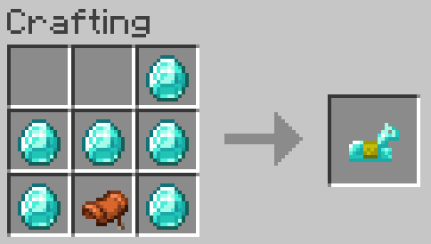
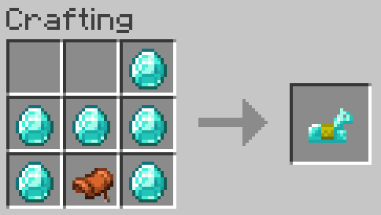

Other
Extra Aditions!
Little quality of life features that aren't marketable but still pretty neat.
- Spawners are minable
- Shulker shell drops are based off of looting now.
- Silverfish can drop string and iron.
- Spore Blossoms are craftable using Grass and Peony.
- Removed the player killed predicate on Wither Skeletons.
- Removed the player killed predicate on Vindicators.
- Corals and Coral Fans can be crafted into dye.
- Pre-1.16 Fishing loot tables are back in place, so enjoy your fish farms.
- Cobwebs are craftable by making an 'x' shape out of string in a crafting grid.
- More bricks are given from their standard crafting recipe.
- Bundles are craftable using their old recipies, using both Leather and Rabbid's Hide.
- Blue Ice can be turned into Packed Ice, and Packed Ice can be turned into normal ice.
- Wool can return 4 String in a crafting grid, making it a better way to store String altogether.
- Name Tags and Horse Armor are craftable, images on how to craft them are provided bellow. For Horse Armor, just swap out the given material for one of your choice.
 

Map Creation & Heads
placeholder